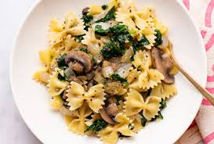
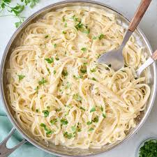
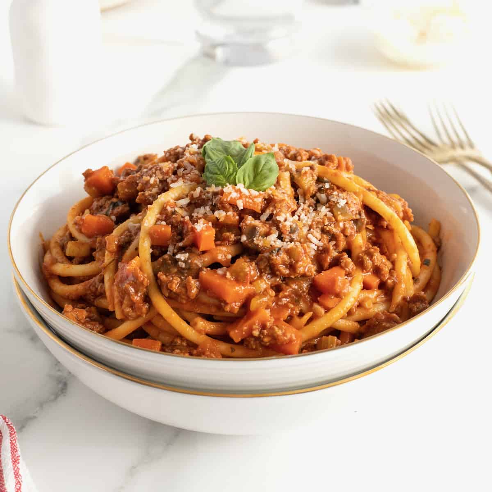

 Farfalle (Italian: [farˈfalle]) are a type of pasta. The name is derived from the Italian word farfalle (butterflies).[1] In the Italian region of Emilia-Romagna, farfalle are known as strichetti (a local word for 'bow ties'). A larger variation of farfalle is known as farfalloni, while the miniature version is called farfalline. Farfalle date back to the 16th century in the Lombardy and Emilia-Romagna regions of Italy.
 Fettuccine[a][b] is a type of pasta popular in Roman cuisine. It is descended from the extremely thin capelli d'angelo of the Renaissance,[2] but is a flat, thick pasta traditionally made of egg and flour (usually one egg for every 100 grams or 3.5 ounces of flour). At about 6.5 mm (1⁄4 inch), it is wider and thicker than, but similar to, the tagliatelle typical of Bologna,[3][4] which are more common elsewhere in Italy and is often used as a synonym. Spinach fettuccine is made from spinach, flour and eggs.
 Bucatini (Italian: [bukaˈtiːni]), also known as perciatelli (Italian: [pertʃaˈtɛlli]), is a thick spaghetti-like pasta with a hole running through the center. It is common throughout Lazio, particularly Rome. The similar ziti (Italian: dziːti]) consists of long hollow rods which are also smooth in texture and have square-cut edges; "cut ziti" are ziti cut into shorter tubes.[1] There is also a wider version of ziti, zitoni (Italian: [dziˈtoːni]).[2]